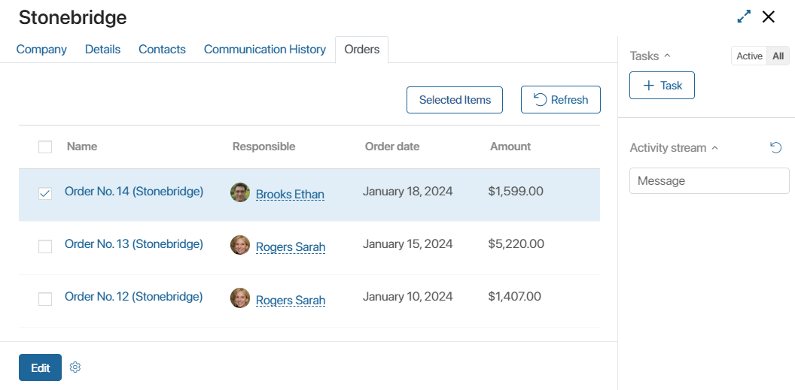

By using the Associated items widget, you can display items of one app on the page of another app. For example, in the CRM workspace, a company’s page can show all orders the client made, so that you can easily open each one.
Configure the widget
The Associated items widget can be set in any app.
For example, let’s link the custom Orders app with the Companies app so that a customer page displays all their orders. You can configure this in several steps.
Step 1. Add a link to the Companies app to the Orders app
Switch to the Advanced Mode in the Form Settings of the Orders app. Add a new App type field. Select the Companies app.
Make sure that you check the Search and Sort box next to this field. Otherwise, you will not be able to use it in the settings of the Associated items widget.
Step 2. Add a new tab to the company page
Open the view form of the Companies app for editing. Please note that the Advanced Mode is the default editing mode for this form.
In the builder, add a new tab by dragging it from the side panel or by clicking on the + icon next to an existing tab. Let’s name the tab Orders.
The Events and System tabs are for system settings that are the same for all the widgets. They allow you to configure a widget’s visibility and access to its data, define what happens, when the user moves or hovers the pointer over the widget, etc. Read more about it in System widget settings.
Step 3. Add and configure the widget
Drag the Associated items widget to the new tab.
Set the widget settings in the opened window.

Fill in the fileds:
- Associated app. Select the app whose items will be displayed on the configured form. For example, specify the Orders app to display all the orders associated with the company on its page.
- Associated field. Select an App type field from the specified app. For example, the Company field added to the Orders app created at step 1.
- Displayed fields. Specify which fields of the app will be displayed on the configured form. To add a field, click the + icon.
- Filter fields. Select the properties of the app that will be used to filter items. Users will be able to select values of these fields above the list of linked items. To add a property, click the + icon.
- Show the refresh button. Enable this option to display a button above the list of app items that will be used to refresh the data.
Save the settings. To finish the configuration, click Save and Publish on the top panel of the interface designer.
Widget in the interface
After all the settings in our example, an additional Orders tab will appear on the company pages. This tab will display all items of the Orders app that have a particular company specified on their pages.
Also, if bulk actions are enabled for the Orders app, you will be able to edit and delete the associated orders items, as well as change their statuses directly on a company page.

You can change the width of any column in the table. To do this, place the cursor over its header and drag the appeared column border to the desired width. The customized width will be saved for all items and forms of the app.
In the editing mode, you can delete the tabs you don’t want and move them around, and also arrange related items not in an additional tab, but directly on the page.
Please note, that if you delete an order associated to a certain company, it will also be deleted from the company page.
Associated items for working with customers
Let’s take a look at how the Associated items widget is used in the CRM workspace. There are two apps for storing information about customers here: Companies and Contacts. They can be part of ready-made solutions from the BRIX Store, in the components of which it is necessary to specify a client or a contact person, for example, the Contract Management solution. In this case, when importing the solution, the Companies and Contacts apps will be updated.
Let's see how the Contract Management solution operates.
When creating a new revenue contract, you will need to specify a contractor. Select the contractor from the list of all contractors stored in the Company app. If it is a new contractor, you can add them to the database directly from the contract page.
The Companies app view form configured in the solution contains additional tabs. For example, on the Contracts tab, you can see associated items, the contracts where this company is listed as a contractor.
When you install the solution, some settings are locked for the apps that are included in the solution. Thus, to change the settings of the app forms, you must first unlock the solution.
Since Company and Contacts are system apps, you can export their associated apps without restrictions.
Found a typo? Select it and press Ctrl+Enter to send us feedback